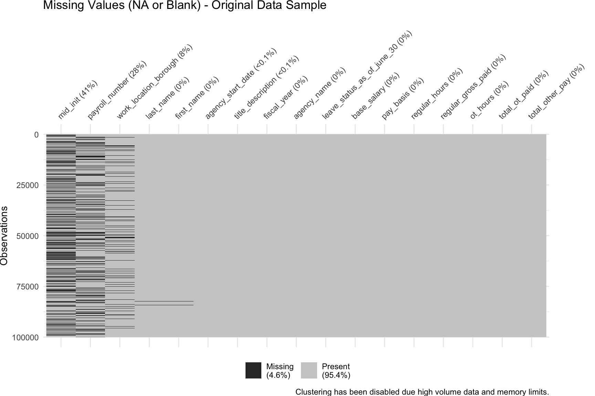

| Column Name | Filter |
|---|---|
| Fiscal Year | From 2015 to 2024 |
| Agency Name | FIRE DEPARTMENT, POLICE DEPARTMENT |
| Work Location Borough | BRONX, BROOKLYN, MANHATTAN, QUEENS, RICHMOND |
| Pay Basis | per Annum, per Day, per Hour |
2 Data
For this project, we will be using a subset of the Citywide Payroll Data.
This dataset is available via NYC OpenData and provided by the Office of Payroll Administration (OPA).
- Fire Department üßë‚Äçüöí üöí
- Police Department üëÆüöì
Here are the filters applied to the original data to produce our final subset of data:
First, we will examine the metadata of the entire dataset, followed by an analysis of missing values to identify any potential issues that may impact our analysis. Finally, we will outline the decision-making process for selecting a subset of the data and transforming the original dataset with 6,225,611 rows to our final dataset with 804,630 rows.
2.1 Description
Data Metadata
| Dataset Name | Citywide Payroll Data (Fiscal Year) |
| Provided by | Office of Payroll Administration (OPA) |
| Data Category | City Government |
| Frequency of Updates | Annually |
| Date Created | October 31, 2015 |
| Data Last Updated | October 30, 2024 |
| Dimensions | 6,225,611 rows and 17 columns |
| Each row represents | City Employee Salary per Fiscal Year |
| Source URL | https://data.cityofnewyork.us/ |
Data Format
| Column Name | Description | Data Type |
|---|---|---|
| Fiscal Year | Fiscal Year | Number |
| Payroll Number | Payroll Number | Number |
| Agency Name | The Payroll agency that the employee works for | Text |
| Last Name | Last name of employee | Text |
| First Name | First name of employee | Text |
| Mid Init | Middle initial of employee | Text |
| Agency Start Date | Date which employee began working for their current agency | Timestamp |
| Work Location Borough | Borough of employee's primary work location | Text |
| Title Description | Civil service title description of the employee | Text |
| Leave Status as of June 30 | Status of employee as of the close of the relevant fiscal year: Active, Ceased, or On Leave | Text |
| Base Salary | Base Salary assigned to the employee | Number |
| Pay Basis | Lists whether the employee is paid on an hourly, per diem or annual basis | Text |
| Regular Hours | Number of regular hours employee worked in the fiscal year | Number |
| Regular Gross Paid | The amount paid to the employee for base salary during the fiscal year | Number |
| OT Hours | Overtime Hours worked by employee in the fiscal year | Number |
| Total OT Paid | Total overtime pay paid to the employee in the fiscal year | Number |
| Total Other Pay | Includes any compensation in addition to gross salary and overtime pay, i.e., Differentials, lump sums, uniform allowance, meal allowance, retroactive pay increases, settlement amounts, and bonus pay, if applicable. | Number |
Importing the data
From this URL, you can click the button ‘Export’, and then select Download File-CSV format (All data 6225611 rows). This will download a file of about 840MB. Remember, we are using the data Last Updated on October 30, 2024.
The file will be downloaded with the name: Citywide_Payroll_Data__Fiscal_Year__YYYYMMDD.csv(YYYYMMDD refers to the date that you downloaded the file)
Once the data was downloaded, it was added to a new folder inside the repository called ‘data_source’.
Code
# import original data
payroll_data_source <- read.csv("./data_source/Citywide_Payroll_Data__Fiscal_Year__20241111.csv")
# make a copy of original data for transformations
payroll_data <- data.frame(payroll_data_source)
# rename columns
names(payroll_data) <- gsub("[\\.]+", "_", tolower(names(payroll_data_source)))
Creating the final subset data
To generate the final subset use the code below:
Code
payroll_data_fire_police <-
payroll_data |>
# clean agency name:
mutate(agency_name_clean = trimws(gsub("#\\d+$", "", agency_name))) |>
# clean location name:
mutate(work_location_borough_clean = toupper(work_location_borough)) |>
# filtering data:
filter(agency_name_clean %in% c("POLICE DEPARTMENT","FIRE DEPARTMENT")) |>
filter(work_location_borough_clean %in% c("BRONX", "BROOKLYN", "MANHATTAN", "QUEENS", "RICHMOND")) |>
filter(fiscal_year >= "2015" & fiscal_year <= "2024") |>
filter(pay_basis %in% c("per Annum", "per Day", "per Hour")) |>
# backfill payroll number after filtering
mutate(
payroll_number_clean = case_when(
is.na(payroll_number) & agency_name_clean == "FIRE DEPARTMENT" ~ 57,
is.na(payroll_number) & agency_name_clean == "POLICE DEPARTMENT" ~ 56,
TRUE ~ payroll_number
)) |>
# converting dates:
mutate(agency_start_date_clean = mdy(agency_start_date)) |>
# renaming clean columns to original names:
mutate(
agency_name = agency_name_clean,
work_location_borough = work_location_borough_clean,
payroll_number = payroll_number_clean,
agency_start_date = agency_start_date_clean
) |>
# dropping clean columns
dplyr::select(-agency_name_clean,
-work_location_borough_clean,
-payroll_number_clean,
-agency_start_date_clean)
# Please uncomment the CSV or the RDS method to save the subset data:
# Save the data CSV
# write.csv(payroll_data_fire_police, "data_source/payroll_data_fire_police.csv", row.names = FALSE)
# Save the data RDS
# saveRDS(payroll_data_fire_police, "data_source/payroll_data_fire_police.rds")
# Read the data RDS
# payroll_data_fire_police <- readRDS("data_source/payroll_data_fire_police.rds")
2.2 Missing value analysis
To analyse missing data, we will classify our data in 4 categories:
■ NA - any values equal to NA
■ Blank - string values equal to “”
■ Zero - numeric values equal to 0
■ Present - any values with data
Using a sample of 1 million records (from 6.22 million rows) we have close to 4.5% of missing data classified as NA or Blank by the vis_miss() plot. We can also observe missing values in 7 columns*:
- 3 columns related to a person’s name (first_name, mid_init, last_name)
- payroll_number
- work_location_borough
- title_description
- agency_start_date
(*based on the black highlights and the percentages listed in the column names)
Code
payroll_data_missing <-
payroll_data |>
sample_n(100000) |>
mutate(across(everything(), ~ if_else(. == "", NA, .)))
payroll_data_missing |>
vis_miss(
sort_miss = TRUE,
# cluster = TRUE,
show_perc_col = TRUE,
warn_large_data = FALSE,
) +
ggtitle("Missing Values (NA or Blank) - Original Data Sample")+
theme(plot.margin = margin(r = 50))
After transforming our original data to create our final subset data (Fire and Police Departments), we can now examine how the missing values from the original compares to the final dataset.
Code
#Data Transformation
payroll_data_total_summary <- payroll_data |>
summarise(across(everything(), ~ n())) |>
pivot_longer(
cols = everything(),
names_to = "Column",
values_to = "Total Count"
)
payroll_data_na_summary <- payroll_data |>
summarise(across(everything(), ~ sum(is.na(.)))) |>
pivot_longer(
cols = everything(),
names_to = "Column",
values_to = "NA"
)
payroll_data_blank_summary <- payroll_data |>
summarise(across(everything(), ~ sum(. == "", na.rm = TRUE))) |>
pivot_longer(
cols = everything(),
names_to = "Column",
values_to = "Blank"
)
payroll_data_zero_summary <- payroll_data |>
summarise(across(everything(), ~ sum(. == 0, na.rm = TRUE))) |>
pivot_longer(
cols = everything(),
names_to = "Column",
values_to = "Zero"
)
payroll_data_combined_summary <-
payroll_data_total_summary |>
inner_join(payroll_data_na_summary, by = "Column") |>
inner_join(payroll_data_blank_summary, by = "Column") |>
inner_join(payroll_data_zero_summary, by = "Column")
# payroll_data_combined_summary
payroll_data_combined_summary_likert <-
payroll_data_combined_summary |>
mutate(`Present` = `Total Count` - `NA` - `Blank` - Zero) |>
mutate(`Present` = `Present` / `Total Count`) |>
mutate(`NA` = `NA` / `Total Count`) |>
mutate(`Blank` = `Blank` / `Total Count`) |>
mutate(`Zero` = Zero / `Total Count`) |>
dplyr::select(`Column`,`NA`,`Blank`,Zero,`Present`) |>
filter(!Column %in% c('agency_name_clean','work_location_borough_clean'))
likert_colors <- c("NA" = "#D7191C",
"Blank" = "#FDAE61",
"Zero" = "#ABD9E9",
"Present" = "#2C7BB6")
payroll_data_fire_police <- readRDS("data_source/payroll_data_fire_police.rds")
payroll_data_fire_police_total_summary <- payroll_data_fire_police |>
summarise(across(everything(), ~ n())) |>
pivot_longer(
cols = everything(),
names_to = "Column",
values_to = "Total Count"
)
payroll_data_fire_police_na_summary <- payroll_data_fire_police |>
summarise(across(everything(), ~ sum(is.na(.)))) |>
pivot_longer(
cols = everything(),
names_to = "Column",
values_to = "NA"
)
payroll_data_fire_police_blank_summary <- payroll_data_fire_police |>
summarise(across(everything(), ~ sum(. == "", na.rm = TRUE))) |>
pivot_longer(
cols = everything(),
names_to = "Column",
values_to = "Blank"
)
payroll_data_fire_police_zero_summary <- payroll_data_fire_police |>
summarise(across(everything(), ~ sum(. == 0, na.rm = TRUE))) |>
pivot_longer(
cols = everything(),
names_to = "Column",
values_to = "Zero"
)
payroll_data_fire_police_combined_summary <-
payroll_data_fire_police_total_summary |>
inner_join(payroll_data_fire_police_na_summary, by = "Column") |>
inner_join(payroll_data_fire_police_blank_summary, by = "Column") |>
inner_join(payroll_data_fire_police_zero_summary, by = "Column")
payroll_data_fire_police_combined_summary_likert <-
payroll_data_fire_police_combined_summary |>
mutate(`Present` = `Total Count` - `NA` - `Blank` - Zero) |>
mutate(`Present` = `Present` / `Total Count`) |>
mutate(`NA` = `NA` / `Total Count`) |>
mutate(`Blank` = `Blank` / `Total Count`) |>
mutate(`Zero` = Zero / `Total Count`) |>
dplyr::select(`Column`,`NA`,`Blank`,Zero,`Present`) |>
filter(!Column %in% c('agency_name_clean','work_location_borough_clean'))Code
payroll_data_missing_group_likert <- bind_rows(
payroll_data_combined_summary_likert |> mutate(group= 'Original Data'),
payroll_data_fire_police_combined_summary_likert |> mutate(group= 'Final Subset Data')
)
HH::likert(x=Column~. | group,payroll_data_missing_group_likert,
positive.order=TRUE,
as.percent = T,
main = 'Missing Value Analysis',
xlab='Percentage',
ylab='Columns',
col = likert_colors,
ReferenceZero=2.5,
rightAxis=FALSE,
# xlimEqualLeftRight=TRUE,
xlim=c(-50,100),
)
Our original dataset has ■ NA data for payroll_number, first_name, last_name. It also has ■ Blank data in 6 columns: first_name, mid_init, last_name, work_location_borough, title_description, agency_start_date.
For both datasets, ■ Zero values show up in columns related to the amount paid to a person, which can be 3 categories: regular, overtime, other. If a certain category is 0, it means the person did not receive any money for that category. This in an important information because it does not requires us to exclude or impute these values. We can observe a significant reduction of zero values in the subset dataset compared to the original.
Our final subset data (Fire and Police Departments) no longer contains ■ NA data, but still contains ■ Blank data in 3 columns: first_name, mid_init, last_name.
For mid_init (Middle Name Initials), 29% of the data in the final subset is Blank, it is ok for us to have blanks in the data, this will not affect the future analysis. For first_name and last_name blank data (1.2% of the data in the final subset is Blank), these values are blank on purpose by the data provider:
…As a part of FISA-OPA’s routine process for reviewing and releasing Citywide Payroll Data, data for some agencies (specifically NYC Police Department (NYPD) and the District Attorneys’ Offices (Manhattan, Kings, Queens, Richmond, Bronx, and Special Narcotics)) have been redacted since they are exempt from disclosure pursuant to the Freedom of Information Law, POL § 87(2)(f), on the ground that disclosure of the information could endanger the life and safety of the public servants listed thereon…
Based on this disclosure, we can confirm the Blank values for the names are part of the Police Department agency:
Code
payroll_data_fire_police |>
filter(first_name == "" | last_name == "") |>
group_by(agency_name) |>
summarise(`Count of Blank Records` = n()) |>
kable(col.names = c("Agency", "Count of Blank Records")) | Agency | Count of Blank Records |
|---|---|
| POLICE DEPARTMENT | 9992 |